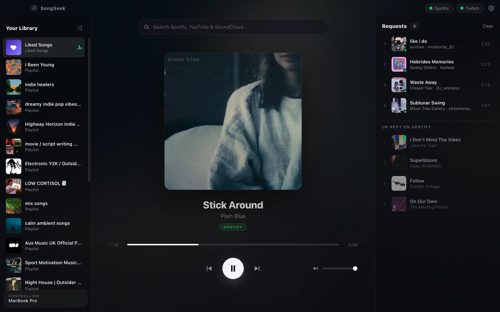
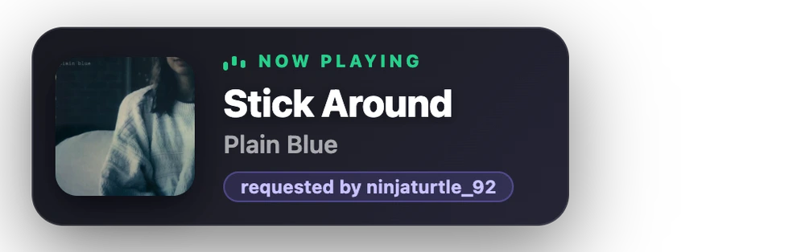
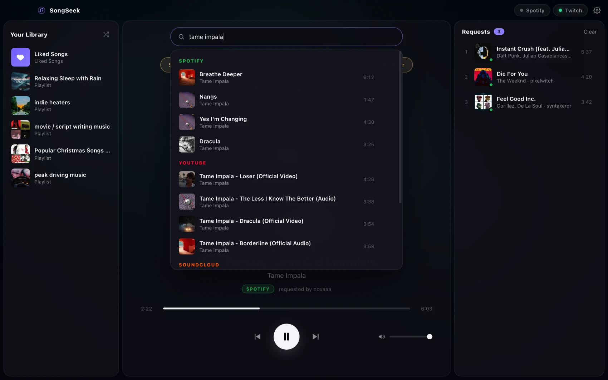
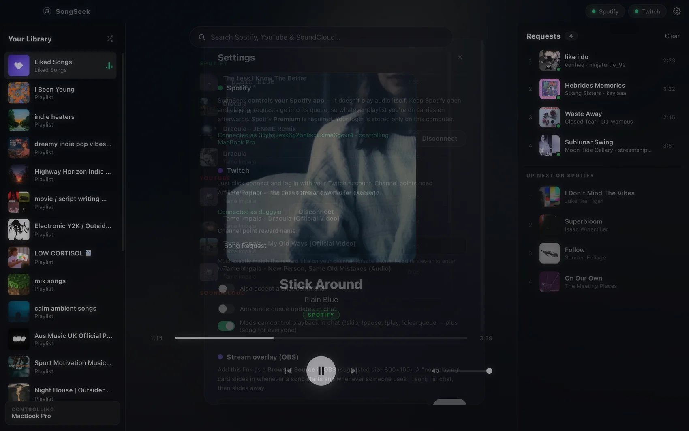

♪
Never interrupts your playlist
Requests are added to Spotify's real queue instead of taking over playback. Your album, playlist or radio continues after the request — exactly like queueing a song yourself.
Free & open source · Windows & macOS
SongSeek turns channel point redemptions and chat commands into a live song queue from Spotify, YouTube and SoundCloud. Requests go straight into your Spotify queue — so the song plays next and your playlist carries on exactly where it left off.
No account to create · No subscription · No on-stream watermark

How it works
Set it up once. After that, SongSeek runs in the background and handles every song request for you while you stream.
Two buttons, two browser logins. No developer account, no API keys, no config files to edit. SongSeek remembers both, so you only do this once.
They redeem your Song Request channel point reward, or type !sr in chat. Song names work, and so do direct Spotify, YouTube and SoundCloud links.
It searches Spotify first, then YouTube, then SoundCloud, and adds the match to the queue with the requester's name attached — all in about a second.
The request slots into Spotify's own queue. Your current song finishes, the request plays, then Spotify picks your playlist back up. Nothing is interrupted or replaced.
Features
Built for streamers who want song requests to feel like part of the show, not a bot fight.
Requests are added to Spotify's real queue instead of taking over playback. Your album, playlist or radio continues after the request — exactly like queueing a song yourself.
Listen for a channel point redemption by name, and/or a !sr command. Not an Affiliate yet? The chat command works on any channel from day one.
One queue, three sources. YouTube requests play as audio, so official music videos that block embedding still work instead of erroring out.
A now-playing card that slides in on every song change, holds, then slides away. Add one browser source and you're done — it updates in real time.
Your mods run the music without touching your PC: !skip, !pause, !play, !clearqueue. Non-mods are ignored automatically.
Your Spotify playlists and Liked Songs sit in the sidebar. Start one with a click and let requests drop in on top of it through the stream.
See every pending request with who asked for it. Remove one, clear them all, or bump a song to play next — right from the dashboard.
New versions download quietly in the background and install when you close the app. No re-downloading installers, no "you're on an old version" surprises mid-stream.
OBS now-playing overlay
SongSeek serves a ready-made now-playing overlay for OBS. Copy the link from Settings, add it as a Browser Source, and it starts working — no HTML to edit, no third-party service, no account.
!song
Inside the app
Type a song and SongSeek searches all three platforms at the same time, Spotify first. Queue it, or play it next — the same search your viewers' requests run through.


Chat commands
SongSeek reads Twitch's own moderator badges, so there's nothing to configure — whoever is modded on your channel can already use these.
| Command | Who | What it does |
|---|---|---|
!sr <song or link> | Everyone | Request a song by name or by Spotify / YouTube / SoundCloud link |
!song | Everyone | Bot replies with the current track and replays the OBS overlay |
!skip | Mods | Skip the current song |
!pause | Mods | Pause playback |
!play | Mods | Resume playback |
!clearqueue | Mods | Clear all pending requests |
Commands have a short cooldown so a spammy chat can't machine-gun skips, and non-mods using mod commands are ignored silently.
Free, open source, and it updates itself. Works on Windows 10/11 and macOS.
Current version 0.2.0 · All releases · Source on GitHub
FAQ
No. Requests are added to Spotify's native queue, so your current track finishes, the request plays next, and Spotify then carries on with the playlist or album you were listening to. SongSeek never replaces what you had on.
For Spotify, yes — Spotify only lets apps queue and control playback on Premium accounts. YouTube and SoundCloud requests work without it.
Yes. SongSeek is a remote control for the Spotify app you already have running rather than a second player, which is exactly why your queue, devices and playlist history stay in one place. Open Spotify, press play, and SongSeek takes it from there.
Yes. Channel point rewards need Twitch Affiliate or Partner, but the !sr chat command works on any channel, including brand-new ones. You can run either or both.
Yes. Mods and you can use !skip, !pause, !play and !clearqueue in chat. SongSeek reads Twitch's moderator badges directly, so there's no allowlist to maintain, and non-mods are ignored.
Open Settings in SongSeek, copy the overlay link, then in OBS add a Browser Source and paste it. A size of roughly 800×160 works well. The background is transparent, so it sits on any scene.
Yes — Spotify and SongSeek are normal desktop audio, so an OBS Desktop Audio source picks them up. If you want music on its own mixer track, route it through a virtual audio device such as VoiceMeeter or VB-Cable on Windows, or BlackHole on macOS.
Yes — free and open source under the MIT license. No subscription, no paid tier, no watermark on your stream, and nothing phones home: your logins and queue stay on your own machine.
Almost. Spotify keeps new API apps in development mode, which limits Spotify logins to accounts that have been added to the app's allowlist (25 max). If you'd like access, open an issue on GitHub and ask to be added — or clone the repo and drop in your own Spotify credentials, which takes about five minutes.
The installer isn't code-signed (certificates are an annual cost), so SmartScreen shows an "unknown publisher" notice. Click More info → Run anyway. On macOS, right-click the app and choose Open the first time. The source is public if you'd rather build it yourself.
It searches Spotify, then YouTube, then SoundCloud. If nothing matches, the bot replies to the requester in chat so they can try a different spelling or paste a link — you don't have to babysit it.